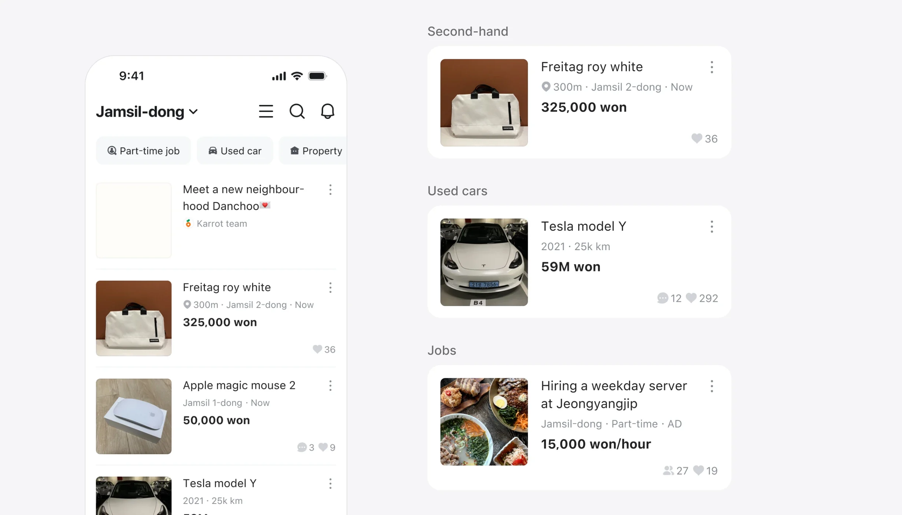
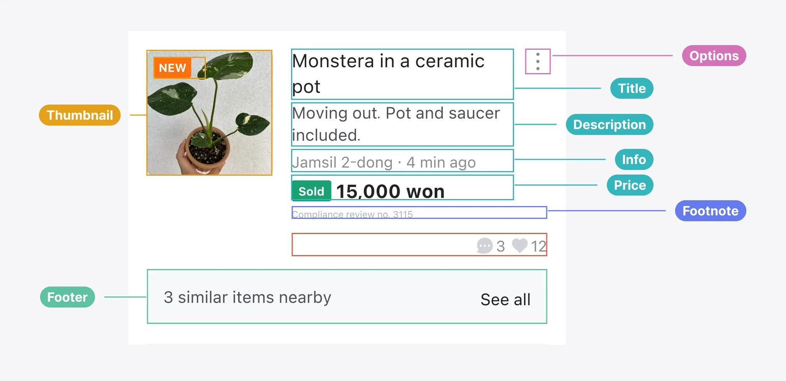
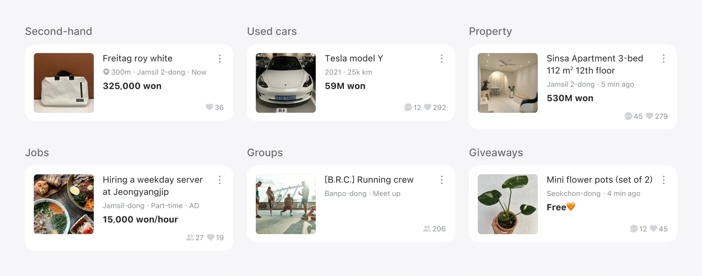
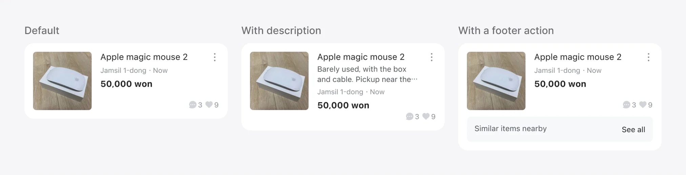

One card system for the home feed, built on a design system.

The home feed was run by a backend-focused team, so each product team built its own feed list. The lists looked alike, but there were more than five versions, each fed by a different data provider. Even a small UI change took about three weeks.
I led the project, did all of the design, and wrote most of the spec with the engineers.
The app ships a set of ready-made layouts, and the server picks which one to show. A card is built from sections, fixed areas that can’t be removed or reordered. Sections hold components, the smallest units. Each component has properties, set with engineers.


Big layout changes are locked. Small ones, like thumbnail size or whether body text shows, are open, so teams can run controlled tests without breaking the feed. That made the home feed experiments on used cars, property and store news possible.

Two years earlier, I joined Karrot’s design system team. With two frontend engineers and two designers, we built the foundations, such as typography and colour tokens, then components and templates such as buttons, navigation and error pages, with guidelines for each. I wrote most of the guidelines and built over half of the components and templates. This work became SEED, Karrot’s design system.
A design system in 2022, a server-driven feed in 2024, and an AI design skill in 2026. Each one let a team ship faster with fewer design bottlenecks. See the design skill in Buy now.